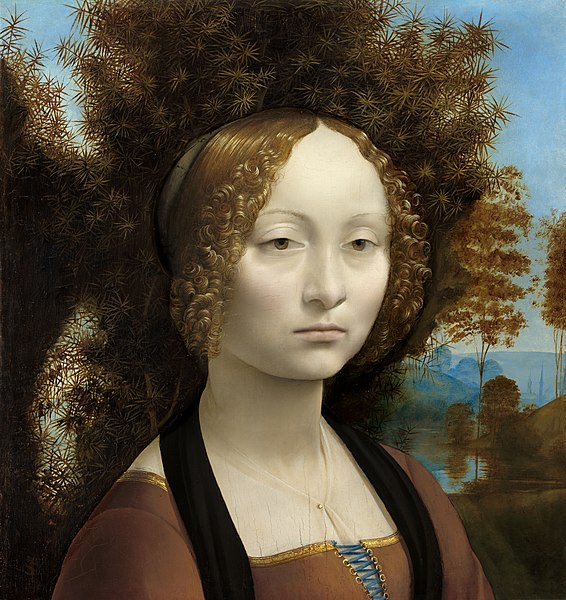
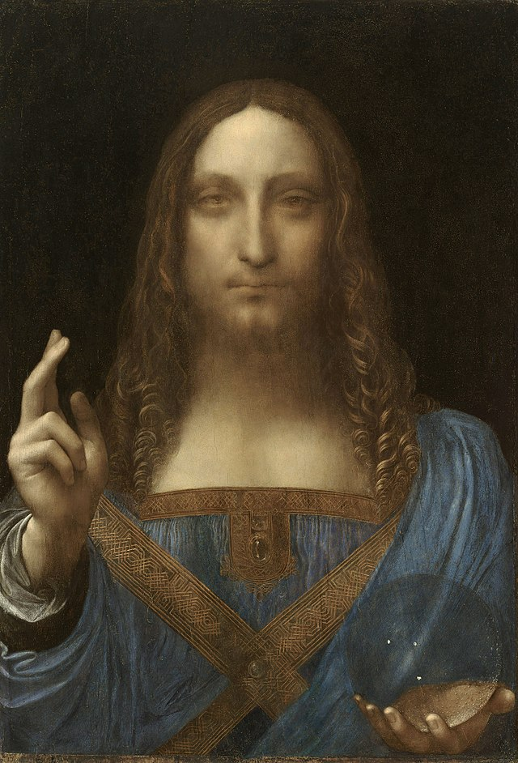

Творби

1.

2.

3.

4.
Leonardo da Vinci
1452 - 1519
Leonardo di ser Piero da Vinci (15 April 1452 – 2 May 1519) was an Italian polymath of the High Renaissance who was active as a painter, draughtsman, engineer, scientist, theorist, sculptor, and architect. While his fame initially rested on his achievements as a painter, he also became known for his notebooks, in which he made drawings and notes on a variety of subjects, including anatomy, astronomy, botany, cartography, painting, and paleontology. Leonardo is widely regarded to have been a genius who epitomized the Renaissance humanist ideal, and his collective works compose a contribution to later generations of artists matched only by that of his younger contemporary, Michelangelo.